Технические решения и проектирование подсистем автоматического управления в ЭСБ различного функционального назначения
Технические решения автоматического пропуска людей
Сущность системы – это ограничение доступа людей в помещения и въезда транспорта. Поэтому основным техническим решением системы является проектирование Различного рода идентификаторов пользователя и заграждающих устройств, не дающих свободного прохода и проезда. Такими устройствами являются электрические замки, которые открываются дистанционно по электрическому сигналу. Электро-защелки, представляют собой ответную часть замка и используются совместно с обычным механическим замком. При подаче управляющего напряжения разблокируется фиксатор электрозащелки, и дверь может быть открыта при выдвинутом положении ригеля механического замка. Доводчики двери (закрыватели) служат для принудительного закрывания двери и обеспечивают надежную работу электрозамков. Регулирующие клапаны позволяют выбрать требуемую скорость закрывания двери.
Принцип работы турникета СКУД прост: если запрос на доступ правомерен, то механическая система, поворачиваясь, открывает проход на охраняемую территорию. К основным видам турникетов относятся:
• калитки;
• триподы
• роторные поясные турникеты;
• турникеты с выдвижными створками;
• турникеты с откидными створками на электроприводы;
• роторные полнопрофильные или полноростовые турникеты.
Триподы и роторные турникеты. Они обеспечивают гарантированный единовременный проход одного человека. Преграждающее устройство трипода выполнено в виде вращающегося блока с тремя цилиндрическими брусьями (штангами), расположенными под углом 120° рис.1.
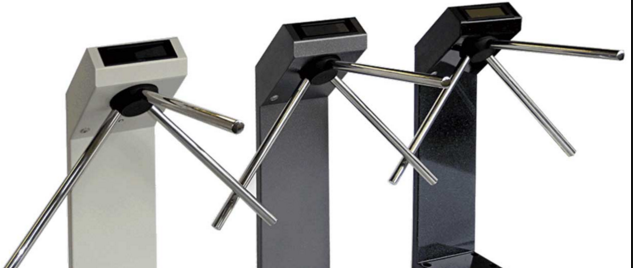
Рисунок 1 – Турникеты триподы
Роторные турникеты, или так называемые «вертушки», предназначены для регулирования входа/выхода на проходных предприятий, военных и специальных объектов, где необходимо полное или почти полное перекрытие зоны прохода рис.2.
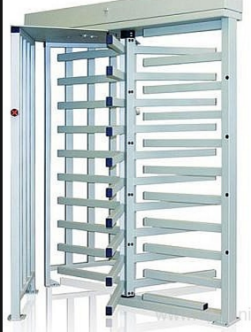
Рисунок 2 – Роторные турникеты
Турникеты-калитки широко используются в магазинах, аэропортах, вокзалах для организации свободного прохода в одну сторону и запрета прохода в другую сторону, а также в банках, учреждениях, на предприятиях для организации свободного выхода рис.3.
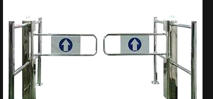
Рисунок 3 – Турникеты-калитки
Шлюзовые кабины могут быть полуавтоматические и автоматические. В полуавтоматических шлюзовых кабинах применяются распашные двери, которые открываются вручную и закрываются доводчиком, но блокируются с помощью электромагнитных или электро-механических замков, управляемых вахтером или контролером. В автоматических шлюзовых кабинах двери открываются и закрываются с помощью электромеханических приводов, управляемых контролером СКУД или вахтером.
В отличие от полуавтоматических шлюзов в автоматических шлюзах применяются двери различных конструкций: распашные одностворчатые и двустворчатые, раздвижные с плоскими или полукруглыми створками, складывающиеся, цилиндрические, одностворчатые и двустворчатые с плоскими поворачивающими створками рис.4.
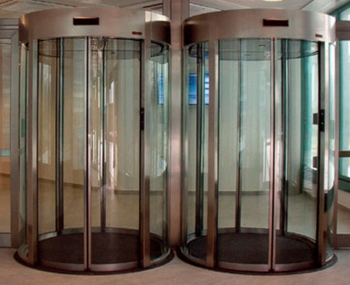
Рисунок 4 – Шлюзовые кабины
Как видим, техническое решение пропуска людей и транспорта отличается большим разнообразием различных исполнительных устройств, которые отличаются своей конструкцией, степенью ограничения доступа.
Идентификаторы пользователя. Для идентификации личности современные электронные СКУД используют устройства нескольких типов. Наиболее распространенными являются:
• кодонаборные устройства ПИН-кода (кнопочные клавиатуры);
• считыватели бесконтактных смарт-карт (интерфейс Виганда);
• считыватели проксимити-карт;
• считыватели ключа «тач-мемори»;
• считыватели штрих-кодов;
• биометрические считыватели.
Бесконтактные считыватели предназначены для приема информации с проксимити-карты (пропуска) и передачи ее в контроллер СКУД. Как правило, считыватели устанавливают на входе в здание, офис или любое помещение рис.5.
Рисунок 5 – Proximity карта
При поднесении на определенном расстоянии к считывателю HID электронного пропуска (проксимити-идентификатора), содержащего персональный код доступа, считыватель распознает код и передает его вконтроллер СКУД. На основании этой информации контроллер принимает решение о запрете/разрешении прохода владельца пропуска в помещение, на входе которого установлен считыватель. Работа считывателя СКУД, в которой используются проксимити идентификаторы, основывается на технологии дистанционной радиочастотной передачи и приема информации.
Карты Виганда представляют собой пластиковую карточку, в которую при изготовлении запрессованы хаотично расположенные отрезки проволочек из специального магнитного сплава рис.6.
Рисунок 6 – Карта Виганда с магнитной полосой и номером
Считывание карты происходит с помощью электромагнитного поля, индуцируемого считывателем. При проведении карты через щель считывателя два ряда проволочек, запаянных в карту, вызывают разнополярные всплески индукционного тока, который преобразуется в двоичный код. Карты Виганда имеют хорошие эксплутационные характеристики. Благодаря отсутствию движущихся частей и герметичности корпуса карта отличается высокой надежностью и долговечностью функционирования, высокой стойкостью по отношению к попыткам физического разрушения и не благоприятным климатическим условиям, в частности, может работать вдиапазоне температур от -40 до + 70 °С.
К недостаткам этой технологии можно отнести довольно высокую (по сравнению с магнитными) стоимость изготовления карточек при их коротком жизненном цикле. Кроме того, по сравнению с магнитной дорожкой плотность записи информации здесь меньше примерно на треть.
Штриховой код представляет собой последовательность параллельных линий разной толщины, нанесенных на поверхность идентификатора рис.7.
Рисунок 7 – Штрих-кодовые карты
В ряде модификаций используется инфракрасное маскирование непрозрачной в оптическом диапазоне пленкой. Наиболее широко штрих-коды используются в торговых и складских системах. В СКУД такая технология используется редко из-за низкой защищенности от подделки, невозможности перезаписи информации, низкой пропускной способности.
Touch memory (iButton, «таблетка») – класс электронных устройств, размещённых в круглом металлическом корпусе, имеющих один сигнальный контакт и один контакт земли. Рис.8 и 9.
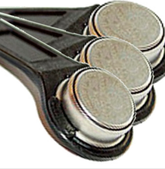
Рисунок 8 – Таблетка ключ
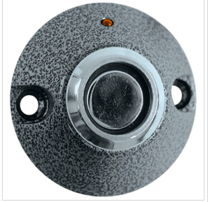
Рисунок 9 – Считыватель ключей Touch memory
Технические решения управления поворотными устройствами камер
Поворотные устройства применяются для расширения угла обзора камер видеонаблюдения, позволяя им просматривать достаточно большие площади, а также осуществлять слежение за движущимся объектом. Камеры, установленные на поворотные устройства, могут перемещаться в горизонтальной и/или вертикальной плоскости, в зависимости от модели устройства. Пример поворотного устройства на рис.10.
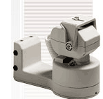
Рисунок 10 – Пример поворотного устройства
Основные характеристики на поворотные устройства. Любое поворотное устройство характеризуется числом плоскостей сканирования (горизонтальная, вертикальная или только вертикальная), местом установки: наружное или внутреннее, а также рядом других технических параметров. Так максимальный угол поворота, определяемый размерами зоны видеонаблюдения, может составлять до 360° в горизонтальной плоскости и до 120° в вертикальной плоскости. Скорость поворота показывает, на сколько градусов в секунду может повернуться устройство. Для большинства поворотных устройств она составляет 5-7°/с. Точность установки, обычно не превышающая 3°, определяет, как точно поворотное устройство выставляет камеру видеонаблюдения в заданное положение. Максимальная нагрузка, которую выдерживают поворотные устройства, определяется типом и габаритамивидеокамеры, которую устанавливают на поворотное устройство.
Управление поворотными устройствами. Конструктивно, поворотное устройство представляет собой две платформы, одна из которых приводится в движение миниатюрными двигателями, установленными на неподвижной платформе поворотного устройства и дистанционно управляемыми со специальных пультов рис.11.
Рисунок 11 – Пульт дистанционного управления
Достаточно часто этот же пульт служит и для управления трансфокатором камеры. В зависимости от комплектации системы видеонаблюдения, поворотные устройства могут управляться напрямую с клавиатур, посредством подачи питания на двигатели выбранного направления, или цифровым кодированным сигналом управления через телеметрический приемник.
Стоит отметить, что важным техническим решением системы видеонаблюдения является многообразие камер видеонаблюдения. Различают аналоговые видеокамеры и видеокамеры с цифровой обработкой сигнала. По своим конструкциям и задачам видеонаблюдения видеокамеры делятся на:
- бескорпусные рис.12;
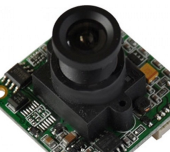
Рисунок 12 – Бескорпусные камеры
- миниатюрные;
- высокочувствительные;
- купольные рис.13;
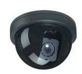
Рисунок 13 – Купольные камеры
- сетевые, совмещающие возможности купольных и размеры миниатюрных видеокамер.
На видеокамеры устанавливаются объективы, что позволяет увеличить дальность работы видеокамеры и улучшить технические характеристики. Для наблюдения за движущимися объектами используют объективы с переменным фокусным расстоянием - трансфокаторы. В условиях быстро меняющейся освещенности применяют объективы с автодиафрагмой.
Техническим решением обработки видеосигналов являются устройства квадраторы, мультиплексоры и др. – к этим устройствам относятся приборы, обрабатывающие видеоизображения, получаемые от нескольких видеокамер, анализирующие изображение и передающие их в заданном формате на видеомонитор. В зависимости от типа используемых видеокамер применяются черно-белые или цветные устройства обработки видеосигналов рис.14.
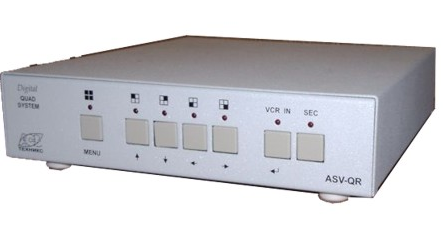
Рисунок 14 – Квадратор
Различают квадраторы (для одновременного вывода на видео-монитор изображений от 4-х видеокамер) и мультиплексоры (для последовательной записи изображений с 4-32-х видеокамер на видеорегистратор (видеомагнитофон) и вывода этих изображений на монитор). Мультиплексоры позволяют просматривать «живое» видео от нескольких видеокамер одновременно и воспроизводить ранее записанные фрагменты.
Техническим решением для записи и хранения данных является – записывающее оборудование (видеомагнитофоны, видеорегистраторы) – устройства обеспечивающие запись, хранение и последующее воспроизведение изображений, поступающих как от видеокамеры, так и от устройства обработки видеосигналов. Аналоговые видеомагнитофоны могут записывать до 960 часов видеоматериалов на одну видеокассету стандарта VHS рис.15.
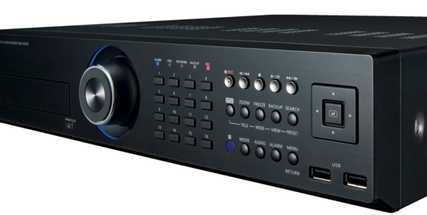
Рисунок 15 – Видеорегистратор
В более крупных CCTV могут использоваться дополнительные управляющие и вспомогательные устройства - матричные коммутаторы, клавиатуры управления видеокамерами, термопринтеры, усилители-распределители, модуляторы и др.
Технические решения системы пожарной сигнализации
Техническое решение системы пожарной сигнализации предполагает своевременное обнаружение пожара, оповещение людей о пожаре и ликвидации очагов пожара.
Для обнаружения пожара применяются пожарные извещатели, к примеру, дымовые, тепловые. Тепловые реагируют на резкое изменение температуры в окружающей среде. Как правило, в них устанавливается механизм, способный реагировать на температуру до 75 градусов по Цельсию. Дымовые ПИ срабатывают при если в окружающей среде резко возрастает концентрация дымовых частиц.
Для оповещения людей о пожаре используется система оповещения, которая срабатывает по сигналу от ППК. Оповещение может быть как световым, так и звуковым, а может быть и световым и звуковым одновременно. На рис.16 показан принцип сработки системы оповещения.
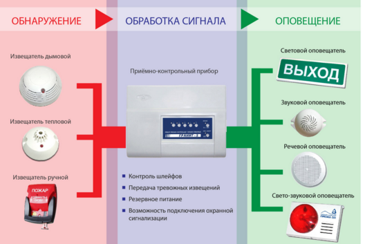
Рисунок 16 – Принцип сработки системы оповещения
Когда извещатели обнаруживают пожар, сигнал поступает на ППК, с которого выдается сигнал для системы оповещения.
Ликвидация очагов пожара осуществляется за счет системы автоматического пожаротушения и системы противодымной защиты.
Противодымная защита здания (СПДЗ) – система объемно-планировочных, конструктивных решений зданий и инженерных устройств, предназначенных для предотвращения задымления защищенных эвакуационных путей и ограничения распространения продуктов горения при пожаре. На рис. 17 показан принцип работы СПДЗ
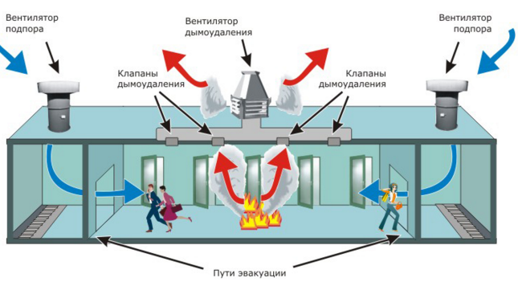
Рисунок 17 – Принцип действия СПДЗ
Противопожарная вентиляция включается при срабатывании пожарной сигнализации и рассчитана на возгорание в одном месте здания. При этом система дымоудаления устраняет дым и продукты горения из очага возгорания и препятствует их распространению в другие зоны, а вентиляторы подпора подают чистый воздух на пути основных и пожарных выходов, в лифты и лестничные пролеты, давая возможность людям покинуть здание.
Автоматическими установками пожаротушения(АУП) называются установки пожаротушения, срабатывающие автоматически - при превышении контролируемым фактором или факторами пожара (температурой, дымом и др.) установленных пороговых значений в защищаемой зоне. Конструктивно автоматические установки пожаротушения состоят из резервуаров наполненных необходимым количеством огнетушащего состава, устройств управления и контроля, системы трубопроводов и насадок-распылителей. Пример спринклерной АУП показан на рис. 18.

Рисунок 18 – Система спринклерной АУП
Системы, состоящие из спринклеров (оросителей), вмонтированных в трубопровод, в котором вода или воздух (в зависимости от системы) находятся под давлением. Принцип действия основан на падении давления в системе. Во время пожара температура в помещении повышается до тех пор, пока термочувствительный элемент в спринклере не разрушится. Термочувствительные элементы в зависимости от температуры разрушения имеют внутри спиртовую жидкость разного цвета. После того как произошло разрушение термочувствительного элемента вода или водный раствор (раствор пенообразователя в воде) начинает вырываться наружу, давление в системе падает, срабатывает узел управления жидкости, а также запускается насос в насосной станции. Насосный узел состоит чаще всего из нескольких клапанов, замедляющей камеры, манометров и системы обвязки.
Техническое решение СПС – это целый комплекс взаимосвязанных и взаимодействующих систем, которые позволяют своевременно реагировать на факторы пожара, тем самым сохранив жизни людей.
Техническое решение системы пожарной сигнализации предполагает своевременное обнаружение пожара, оповещение людей о пожаре и ликвидации очагов пожара.
Технические решения системы охранной сигнализации
Техническое решение системы охранной сигнализации предполагает обнаружение несанкционированного проникновения в помещение злоумышленника и оповещения о данном проникновении. Для обнаружения посторонних лиц в помещении используются различного рода датчики такие как магнитно-контактные, устанавливаемые на дверях, и срабатывающие в случае открытия дверей, объемные датчики, реагирующие на перемещение тела, от которого исходит ИК излучение, датчики разбития стекла, реагирующие на колебания с частотой порядка 1500 Гц, производимые разбиваемым стеклом, или на колебания высокой частоты, обусловленные внутренними напряжениями стекла, когда его раскалывают или вырезают, датчики воздействия на стены. Пьезокерамические, или сейсмические, датчики позволяют регистрировать вторжение через перегородку или стену с помощью механических и термических инструментов.
Для обработки сигналов с датчиков используется ПКП. Он осуществляет слежение и контроль за всеми датчиками. В случае срабатывания датчика он обрабатывает полученный от него сигнал, и в соответствии с запрограммированной в его энергонезависимую память тактикой охраны, выдает сигнал на исполнительные устройства.
Для осуществления оповещения о вторжении и формирования сигнала в соответствующие органы используются исполнительные устройства. активируются данные устройства при приеме сигнала от приемно-конирольного прибора. Обычно сигнал от ПКП включает свето-звуковое устройство (сирену) и осуществляет дозвон с речевым сообщением на городской или мобильный телефоны. Передача сигнала от ПКП может осуществляться по городской телефонной сети ГТС, по GSM, по радиоканалу (когда выделяется определенная частота для передачи тревожного сигнала), либо через интернет. Схема СОС показана на рис. 19
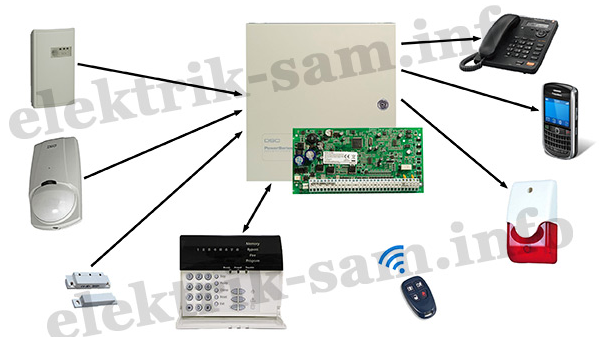
Рисунок 19 – Схема СОС
Технические решения авиации
Авиация характеризуется многообразием систем безопасности. Так в одном самолете имеются такие системы как система предупреждения столкновений самолетов, система автоматического управления самолетом, навигационная система.
Система предупреждения столкновений самолетов (TCAS) – это система (в последних ее вариантах и модификациях) обозревает воздушное пространство вокруг самолета, обнаруживает другие воздушные суда, анализирует полученную информацию, выдает ее экипажу, а в случае возникновения опасности столкновения, предупреждает об этом пилотов и выдает необходимые рекомендации к немедленному действию. В комплект оборудования TCAS входят: компьютерный блок, который просчитывает варианты развития событий и определяет выдаваемые команды, две приемопередающие антенны, устанавливаемые сверху и снизу фюзеляжа, отдельные антенны для S - транспондеров, использующие принцип вторичной радиолокации и дисплей-индикатор в кабине. Этот дисплей – индикатор выдает информацию о перемещении близколетящих самолетов, а также визуальные команды для предотвращения столкновений (RA).
Есть несколько видов индикатора и вариантов его установки. Часто он совмещается с имеющимися дисплеями (например бортового локатора, указателя вертикальной скорости) либо устанавливается отдельно, если кабина была ранее оснащена механическими стрелочными указателями. Примеры индикаторов-дисплеев совмещенного и несовмещенного представленны на рис.20 и 21
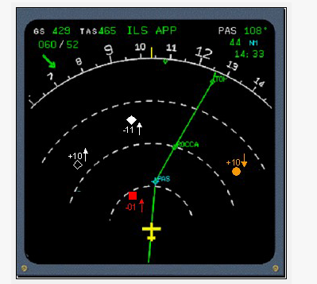
Рисунок 20 – Совмещенный дисплей
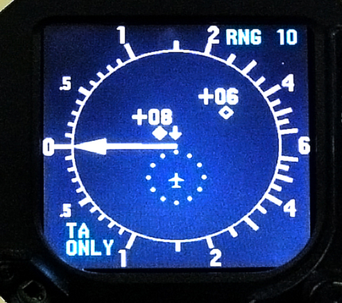
Рисунок 21 – Несовмещенный дисплей
TCAS может осуществлять наблюдение за самолетами как в режиме работы транспондеров С, так и в режиме S. Приемопередатчики, работающие в режиме S ежесекундно излучают самогенерируемые сигналы, так называемые сквиттеры. В этом сигнале содержится адрес отправителя. По его данным ТКАС адресно отправляет запрос и по полученному ответу определяет дальность, курсовой угол (азимут) ивысоту контролируемого самолета. Получаемые данные отправляются в вычислительный блок, который имея сведения обо всех воздушных судах, вычисляет степень опасности каждого контролируемого самолета по отношению к борту, на котором установлена система, тем самым формируя объемную карту защищаемого пространства вокруг самолета. Пример такой объемной карты представлен на рис.22.
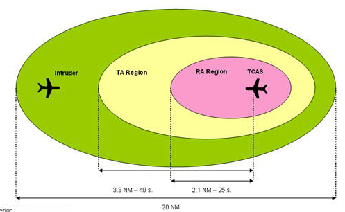
Рисунок 22 – Объемная карта системы TCAS
Выдаваемые команды можно разделить на консультативные(ТА) и команды для непосредственных немедленных действий по предотвращению столкновения(RA). Консультативные команды предупреждают о том, что самолет вошел в защищаемую зону и необходимо усилить внимание и быть готовым к выдаче сигнала RA. Примеры визуальных команд представлены на рис.23
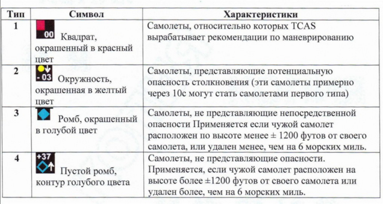
Рисунок 23 – Визуальные команды системы TCAS
Звуковые команды RA можно разделить на корректирующие и предупредительные.
Корректирующие предписывают пилоту немедленно снизить траекторию движения в вертикальной плоскости во избежание столкновения. Пример команд представлен на рис.24. Предупредительные команды выдают пилоту рекомендации по выдерживанию определенных вертикальных скоростей. Пример команд представлен на рис.25
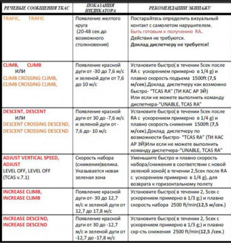
Рисунок 24 – Корректирующие звуковые команды
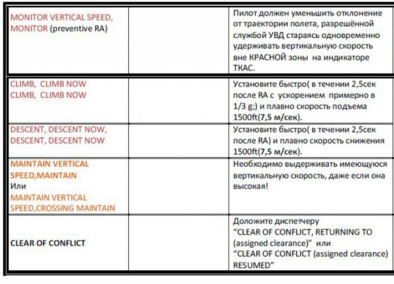
Рисунок 25 – Предупредительные звуковые команды
Система автоматического управления самолетом. Система, которая обеспечивает управление самолетом без вмешательства пилота, тем самым представляя возможность отдыха пилотам.
Вычислительная часть указанных систем объединена и реализуется в двух «кабинетах», размещаемых по двум бортам. Пример системы автоматического управления самолетом приведена на рис.26.
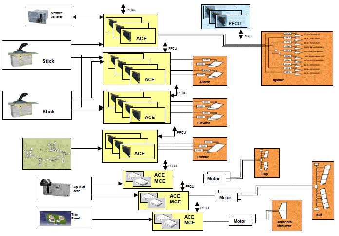
Рисунок 26 – Схема управления самолетом
Система ручного управления представляет собой цифровую систему дистанционного управления (СДУ) без механического резерва. СДУ совместно с комплексом бортового оборудования самолёта (КБО) предназначена для управления рулями высоты, элеронами,интерцепторами (в режимах поперечного управления и воздушных тормозов) от пассивных боковых ручек и рулем направления от педалей, а также стабилизатором и тормозными щитками. Вычислительная часть СДУ выполнена по схеме «2 борта», т.е. разделена на две подсистемы, и имеет цифровые линии межмашинного обмена для передачи информации в вычислители другого борта с целью контроля данных и обеспечения их идентичности в разных каналах.
Система управления стабилизатором предназначена для перемещения стабилизатора в балансировочное положение на всех этапах и режимах полёта во всей области ожидаемых условий эксплуатации. Управление стабилизатором обеспечивает балансировку в полете по продольному каналу путем перестановки стабилизатора в диапазоне от +2° до –12°. При этом руль высоты удерживается в положении близким к нейтральному; при отключении автоматического режима на любом этапе полета перегрузка не превышает 0.15.Управление стабилизатором осуществляется системой управления МПС, которая является двухканальной системой управления механизмом перемещения стабилизатора (МПС).
Система управления механизацией крыла включает системы управления закрылками и предкрылками работает в следящем (ручном) режиме по сигналам ручки управления механизацией. Управление закрылками осуществляется двухканальной электродистанционной системой. Приводом системы является электромеханизм с двумя вентильными бесконтактнымиэлектродвигателями с электромагнитными муфтами торможения. Вращение привода передается через систему редукторов и трансмиссионных валов к исполнительным шариковым винтовым механизмам, гайки которых перемещают по рельсам каретки закрылков. Траектория выдвижения закрылков определяется механизмами отклонения на рельсах, по которым выдвигаются секции закрылков.
Cистема навигации. Различают общую и частную задачи навигации. ОБЩЕЙ задачей навигации является обеспечение перемещения самолетов в заданную точку по заданной траектории за определенное время и с необходимой точностью. ЧАСТНОЙ задачей навигации является вычисление текущих координат местоположения самолета. Эта задача решается навигационными устройствами и системами, которые определяют место самолета, то есть координаты проекции его центра масс на поверхность Земли.
Для определения места самолета используются следующие методы:
1. Обзорно-сравнительный – заключается в визуальном или автоматическом сравнении наблюдаемой местности или участка неба с географической или звездной картой.
2. Позиционный – заключается в вычислении координат самолета из геометрических соотношений, когда исходной информацией являются дальности, азимуты (пеленги) или курсовые углы до точек на земной поверхности с известными координатами, или высоты и азимуты светил, наблюдаемых с самолета.
3. Метод счисления пути – заключается в интегрировании во времени ускорения или скорости движения центра масс самолета. Счисление пути осуществляется на основе воздушного (аэрометрического), доплеровского и инерциального способов навигационных измерений.
В навигационных системах используются несколько систем координат, каждая из которых обеспечивает решение своих задач. Такими системами координат являются географическая, геодезическая ортодромическая. Примеры координат представлены на рис.27(а,б,в).
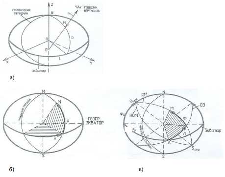
Рисунок 27 – Примеры систем координат навигационных систем:
a – геодезическая, б– географическая, в– ортодромическая
В современных навигационных системах основной является ортодромическая система координат (ОСК), которая обеспечивает перемещение самолета по кратчайшему расстоянию между двумя точками на поверхности сферы. Важным преимуществом ОСК является то, что ее можно применять на всей поверхности Земли, в том числе и на географических полюсах.
Инерциальные навигационные системы. Из всех навигационных систем инерциальные навигационные системы (ИНС) являются единственными, которые удовлетворяют таким важным требованиям, как универсальность, полная автономность, помехозащищенность и помехоустойчивость. Существующие ИНС обеспечивают более высокую точность навигации. Помимо вычисления продольной и поперечной координат, ИНС определяют также угловое положение самолета в выбранной системе координат, то есть курс, крен, тангаж. Угловое положение определяется путем измерения отклонений самолета от запомненной в ИНС выбранной системы координат.
В зависимости от способа моделирования (запоминания), ИНС подразделяются на
1. Платформенные: навигационная система координат моделируется физически – в виде ориентации по трем осям специальной гиростабилизированной платформы (ГСП). ГСП в течение всего рабочего времени сохраняет неизменной ориентацию, заданную в процессе подготовки (выставки) ИНС.
2. Бесплатформенные: акселерометры устанавливаются непосредственно на самолет, а опорная система координат моделируется математически.
Принцип построения элементарной ИНС, определяющий линейные и географические координаты, рассмотрим по рис.28.
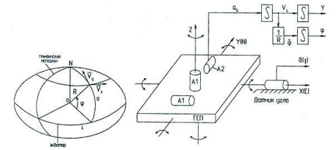
Рисунок 28 – Принцип построения ИНС
Из рисунка видно, что ГСП имеет 3 степени свободы. В узлах подвеса ГСП размещены датчики курса, крена, тангажа (на рис. 28 изобАражен лишь один из них). Продольная ось ГСП чаще всего ориентируется на север. Линейные координаты ЛА формируются путем двойного интегрирования сигналов акселерометров, а географические – интегрированием сигнала угловой скорости движения ЛА вокруг Земли. Сигнал углового смещения ЛА появляется на выходе датчика угла при любом вращении ЛА вокруг неподвижной оси подвеса ГСП.
Технические решения железнодорожного транспорта
Обеспечение безопасности железнодорожного транспорта играет важную роль, поскольку данный вид транспорта является основным в перевозке пассажиров на дальние расстояния, в мире осуществляется множество перевозок грузов товарными поездами. Существуют различные системы безопасности на железнодорожном транспорте. Основные системы безопасности рассмотрим ниже.
Система автоматического управления тормозами(САУТ) – система, управляющая тормозной системой поезда. Принцип работы системы рассмотрим на примере графика траектории при прицельном торможении перед закрытым сигналом, представленным на рис.29
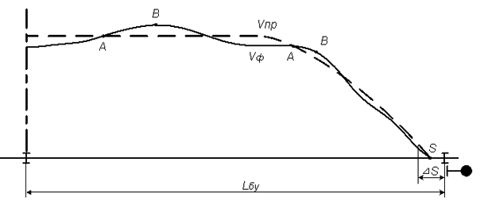
Рисунок 29 – Траектория движения поезда при прицельном торможении перед закрытым сигналом
На основании информации о профиле пути, длине блок-участка Lбу и тормозных характеристик поезда система САУТ определяет max допустимую программную скорость движения поезда Vпр. Во время следования поезда САУТ производит измерение фактической скорости Vф, сравнивает ее с программной скоростью и в случае необходимости воздействует на тормозные и тяговые средства поезда. Если фактическая скорость на блок-участке меньше программной (Vф<Vпр), то система САУТ никак не воздействует на процесс ведения поезда. Допустим, из-за сложившейся поездной ситуации машинист начинает увеличивать скорость Vф и её величина станет приближаться к значению программной скорости Vпр. Когда Vф достигнет значения (Vпр-2) км/ч, на графике это точка "А", исполнительными элементами САУТ отключится тяга локомотива. Если же, например, на спуске, скорость поезда будет продолжать увеличиваться и начнет превышать программную, то при значении Vф = (Vпр+2) км/ч, на графике это точка "В", исполнительными элементами САУТ включит служебное торможение. Но могут быть случаи, когда и после включения служебного торможения Vф поезда не приводится к Vпр. В таком случае при достижении Vф= (Vпр+6) км/ч включится экстренное торможение. В соответствии с программной траекторией движения, поезд должен остановиться в точке прицельного торможения Sпт.
Любое управляюще-измерительное устройство, в том числе и аппаратура САУТ, имеет определенные погрешности соответствующих исполнительных воздействий и вычислений. Поэтому абсолютно точно в заранее заданной точке перед закрытым светофором произвести остановку поезда невозможно. Диапазон расстояний S определяет погрешность системы или область допустимого изменения положения точки прицельной остановки поезда S. Для недопущения проезда сигнала с запрещающим показанием правая граница области S не должна пересекать ординату изолирующих стыков светофора "Ч1". значительный "плюс" системы САУТ заключается в том, что если произошла остановка поезда или снижение скорости по заданному ограничению автоматически – аппаратурой САУТ (не машинистом), то этот момент не фиксируется ни какими регистрирующими приборами. Тем самым исключается негативное психологическое влияние работы САУТ на машиниста. Пример структурной схемы САУТ представлен на рис. 30
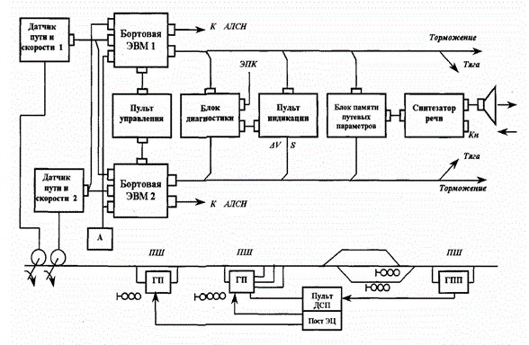
Рисунок 30 – Структурная схема САУТ
ГП - путевой генератор;
ПШ - путевой шлейф;
ДПС - датчик пути и скорости;
А - антенна (получает информацию от путевых генераторов и пересылает ее на 2-е бортовые ЭВМ, помимо этого на эти ЭВМ передаются данные от двух датчиков скорости и пути, сигналы АЛСН и информация от пульта управления);
блок диагностики контролирует работу 2-х бортовых ЭВМ, если информация, полученная от них, не совпадает, то он выдает сигнал ЭПК и производит экстренное торможение;
блок памяти путевых параметров используется для записи путевых параметров;
пульт индикации используется для информирования машиниста о расстоянии до конца блок-участка, о допустимой скорости движения и др.
бортовые ЭВМ выдают сигналы отключения или включения служебного торможения или тяги;
синтезатор речи выдает машинисту речевые сообщения о показаниях светофоров или препятствиях.
У входа на станцию размещается путевой генератор, он подключается к путевому шлейфу. Длина шлейфа может изменяться и зависит от длины приемоотправочных путей.
На выходе станции размещается программируемый путевой генератор ГПП.
Автоматическая локомотивная сигнализация (АЛС) — система сигнализации на рельсовом транспорте, передающая сигнальные показания на пост управления подвижного состава (например, в кабину локомотива, моторвагонного поезда, дрезины и т. п.)
В состав системы АЛС входят напольные передающие устройства, приёмные и дешифрующие устройства на подвижном составе, а также устройства, согласующие работу АЛС с другими компонентами сигнализации и блокировки, индикаторы, датчики и исполнительные устройства на подвижном составе.
Для кодирования сигнала могут применяться практически любые известные способы кодирования. Однако в России и странах СНГ применяются два способа кодирования сигналов АЛСН: импульсный числовой, основанный на передаче серий (посылок) импульсов переменного тока (информацию несут число и длительность импульсов в посылке), и частотный, при котором непрерывно передаётся переменный ток определённой частоты
Локомотивная аппаратура АЛСН содержит: приёмные катушки, фильтр, усилитель, дешифратор, а также локомотивный светофор и рукоятки бдительности. Фильтр, установленный на входе усилителя, пропускает только кодовый переменный ток, отсекая все прочие токи. Кодовый ток на неэлектрифицированных линиях и линиях постоянного тока 3 кВ имеет частоту несущей 50 Гц. На линиях же, электрифицированных переменным током напряжением 25 кВ и частотой 50 Гц, это недопустимо из-за влияния тягового тока на АЛСН, поэтому на таких линиях применяется кодовый ток с частотой несущей 25 Гц (на некоторых участках — 75 Гц), вырабатываемый установленным на сигнальной точке преобразователем. на границах этих участков устанавливаются сигнальные знаки «АЛС-50» и «АЛС-25» или, например, щиты, с одной стороны которых написано «25», с другой — «75» рис.31
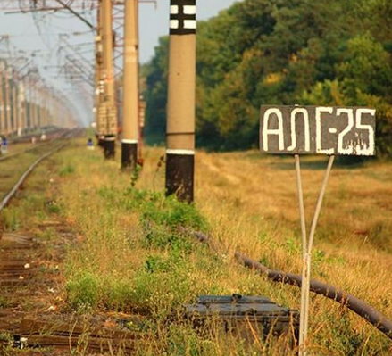
Рисунок 31 – Информационные таблички АЛС
Дешифратор расшифровывает кодовые комбинации и выполняет некоторые другие функции. Формирует кодовые комбинации специальное устройство на сигнальной точке— кодовый путевой трансмиттер. Контакты «З» замыкаются три раза примерно на 0,3 сек с интервалами между замыканиями 0,12 сек (малыми интервалами), после чего следует интервал 0,57-0,8 сек (большой интервал) и кодовая комбинация передаётся снова. Так передаётся кодовая комбинация, соответствующая зелёному огню на путевом светофоре.
Кодовая комбинация, соответствующая жёлтому огню, создаётся контактами «Ж» и состоит из двух импульсов, кодовая комбинация «КЖ», передаваемая при красном огне на путевом светофоре.
При приёме кодовой комбинации «КЖ» на локомотивном светофоре горит соответствующий красно-жёлтый огонь. Если кодовый сигнал АЛСН теряется (перестает приниматься) после приёма кодовой комбинации «КЖ», то на локомотивном светофоре загорается красный огонь— считается, что локомотив проехал красный огонь светофора и въехал на рельсовую цепь, которая ещё зашунтирована идущим впереди поездом.
При потере кодового сигнала в случае горения огня «З» или «Ж» на локомотивном светофоре загорается белый огонь. Обычно это означает, что поезд вышел на некодируемый путь, либо сообщает о какой-либо неисправности (неисправность сигнальной точки, обрыв рельсовой цепи) или внезапном загорании красного огня на впереди стоящем светофоре. Если впереди находится заградительный светофор переезда или иного опасного места, то появление белого огня требует немедленной остановки. Пример кодовых посылок АЛСН представлен на рис.32
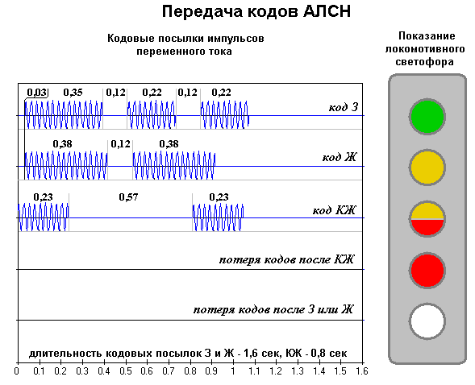
Рисунок 32 – Кодовые посылки АЛСН
Технические решения наземного транспорта
Cистема регулирования светофоров – система, которая осуществляет регулирование светофоров на дорогах. Блок управления осуществляет управление светофорным объектом, который представляет собой группу светофоров, установленных на участке дорожной сети, очерёдность движения по которому конфликтующих транспортных потоков или транспортных и пешеходных потоков регулируется светофорной сигнализацией.
Простейший способ управления светофором — электро-механический, с помощью кулачкового механизма. Более продвинутые электромеханические контроллеры имели несколько программ работы (несколько пакетов кулачков) — под разные нагрузки перекрёстка. В современных светофорах применяются микропроцессорные схемы. В крупных городах, страдающих от «пробок», светофорные объекты подключают к единой системе регулирования движения (как правило, через GSM-модем). Это позволяет оперативно изменять программы работы светофора (в том числе временно, на несколько часов или дней) и синхронизировать светофорные объекты друг с другом с точностью до секунд. Для прохода пешеходов через оживлённую трассу, а также на неравнозначных перекрёстках применяются контроллеры вызывного действия, дающие зелёный, когда со второстепенного направления приближается машина (для этого под асфальтом располагается индуктивный датчик) или когда пешеход нажмёт на кнопку.
Контроллер БСР-4 предназначен для организации регулирования движения с помощью двухцветных светофоров напряжением 220В переменного тока или 24В постоянного тока рис.33
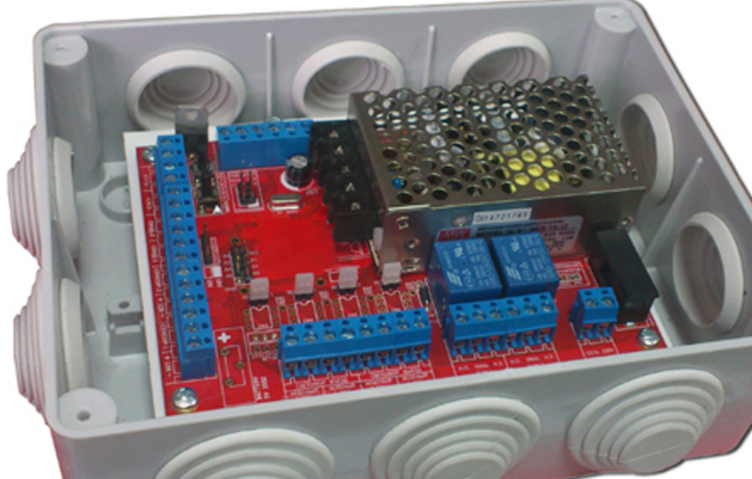
Рисунок 33 – Контроллер БСР-4
Блок управления светофорами БСР-4 имеет два основных режима работы:
- Реверсивный (однопроездный) режим – это когда движение организованно по одной полосе и следовательно необходимо решать задачу нахождение на полосе только одной машины в данный момент времени.
- Двухпроездный режим работы – это когда движение организованно по разным полосам.
Пример реверсивного режима работы на рис.34.
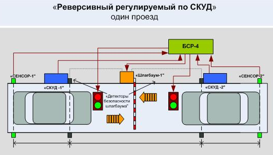
Рисунок 34 – Реверсивный режим работы БСР-4
Пример двухпроездного режима работы на рис.35
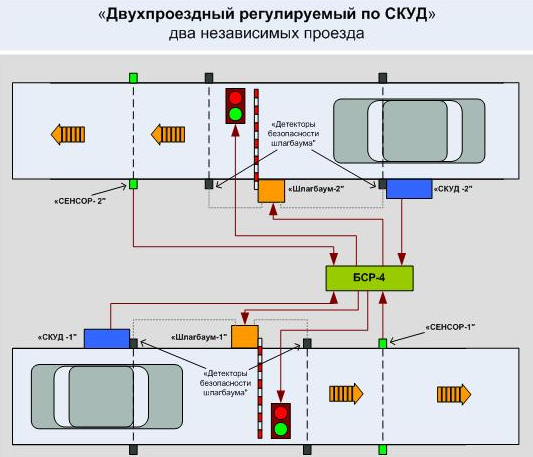
Рисунок 35 – Двухпроездный режим работы БСР
Система видеонаблюдения видеорегистраций нарушений ПДД. Рассмотрим данного рода системы на примере системы ВОКОРД – это система видеофиксации детектирующая нарушение правил дорожного движения предназначена для фиксирования:
В состав аппаратно-программного комплекса VOCORD Traffic входят следующие элементы:
1. VOCORD NetCam4 – специальные камеры высокого разрешения.
2. Инфракрасные импульсные прожекторы.
3. Радарные комплексы.
4. Уличные серверы, с установленным специальным программным обеспечением.
Пример структурной схемы системы ВОКОРД представлен на рис.36
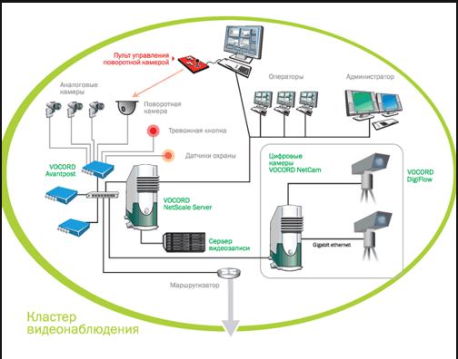
Рисунок 36 – Cтруктурная схема системы ВОКОРДР
В то время когда автомобиль проезжает установленную зону контроля система VOCORD Traffic фиксирует его скорость с помощью радарного комплекса и распознает государственный номерной знак. Каждый автомобиль фиксируется три раза, сначала номер автомобиля крупным планом, затем крупным планом фотографируется сам автомобиль и третьим делается общий план рис.37.
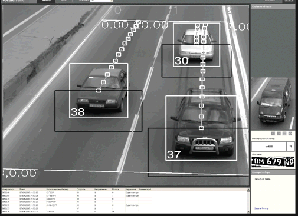
Рисунок 37 – Принцип съемки автомобилей
Все три фотографии и запись о нарушении правила поступают в базу данных на сервер. С базой данных работает оператор, который формирует квитанции о нарушениях.
Фиксация средней скорости движения автомобиля. Система фиксации VOCORD Traffic способна измерять скорость как стационарно (радар измеряет скорость движения транспортного средства в определенной точке), так и в среднем на определенном участке.
С этой целью на участке определяются два рубежа – в начале участка и в его конце (в этих участках система фиксирует номера ТС). После того, как транспортное средство минует первый, а затем второй рубеж, система рассчитывает среднюю скорость движения исходя из времени, за которое ТС проехало этот участок. Данный способ определения средней скорости предназначен для борьбы с нарушителями, которые знают об установленных стационарных системах фиксации скорости, и заблаговременно снижают скорость.
Фиксация нарушений на переездах и перекрестках. Для того, чтобы зафиксировать нарушение при проезде перекрестка или переезда, система фиксации подключается к контролеру установленном в светофоре.
При этом используется не только камера, обеспечивающая фотоснимок нарушения, а также устанавливается направленная на светофор камера обзорного вида. Фиксирование нарушения осуществляется следующим образом. После переключения сигнала светофора на красный свет, автомобиль, заехавший за стоплинию на перекрестке, является нарушителем, и как описывалось выше, камера фиксирует его в трех ракурсах. А видеоинформация данного нарушения идет как дополнение подтверждающее нарушение.
Подсистема метеорологического обеспечения обеспечивает контроль, анализ и прогнозирование метеорологической обстановки на дорогах для планирования и проведения антигололёдных мероприятий. Данные от метеостанций рис.38 передаются в Центральный пункт управления интеллектуальной транспортной системы для обработки. После обработки данных информация поступает в дорожные подразделения, занимающиеся эксплуатацией дорог, а текущая информация об экстремальных погодных условиях на информационные табло и управляемые дорожные знаки рис.39/p>
Основные функции системы:
• Определение изменений метеоусловий в реальном масштабе времени;
• Информационное обеспечение, на основе прогнозируемых данных, производственных процессов по содержанию дороги.
• Обеспечение эксплуатирующей организации информацией о метеоусловиях на автодороге (Автоматическое измерение до 30 параметров метеовеличин и параметров поверхности покрытия дороги (сухое, влажное, мокрое, мокрое с химикатами, наличие льда, инея, снега, воды), оценка противообледенительного химиката, оценка толщины слоя воды на поверхности и температуру замерзания).
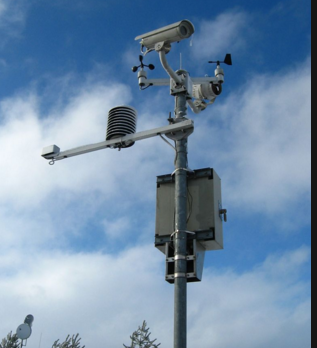
Рисунок 38 – Метерологичкские станция
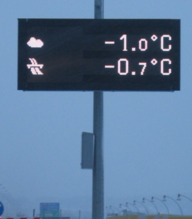